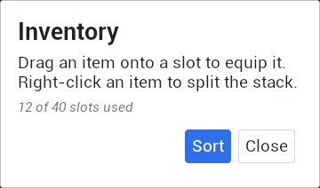
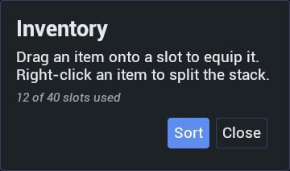

slater /ˈsleɪ.tər/ noun. In Unreal Engine, something that lays out Slate for you, from a text file, while the game is running.
A text-first, declarative UI layer for Unreal Engine. Describe a screen in a small HTML-like file, get real native Slate widgets, and watch it update the instant you save. No recompile, no Blueprint graph, no opaque .uasset.
Panel.sltr
<surface role="UI.Surface.Panel" inset="UI.Space.L" width="360">
<vbox>
<text font="UI.Font.Heading" margin="UI.Space.S">Inventory</text>
<text wrap="true" margin="UI.Space.S">Drag an item onto a slot to equip it. Right-click an item to split the stack.</text>
<text font="UI.Font.Caption" color="UI.Color.TextMuted" margin="UI.Space.S">12 of 40 slots used</text>
<hbox margin="UI.Space.M" halign="right">
<surface role="UI.Surface.Button" inset="UI.Space.M" margin="UI.Space.S">
<text color="#FFFFFF">Sort</text>
</surface>
<surface role="UI.Surface.Panel" inset="UI.Space.M" margin="UI.Space.S">
<text>Close</text>
</surface>
</hbox>
</vbox>
</surface>Colors, fonts, spacing and surfaces are tokens from a separate style file. Swap the style and the same layout is re-themed, with no change to the layout.

